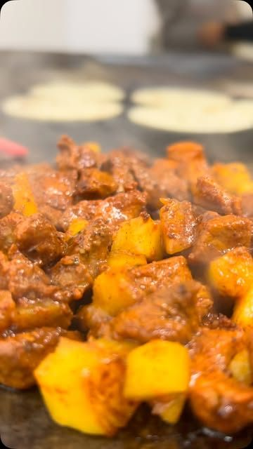
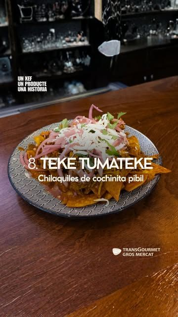
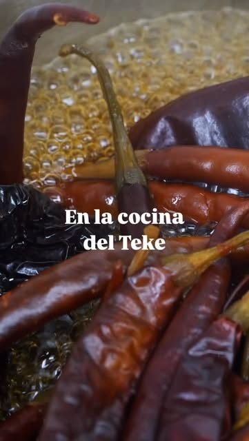
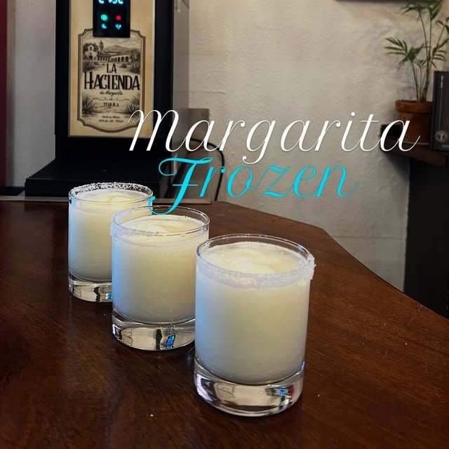
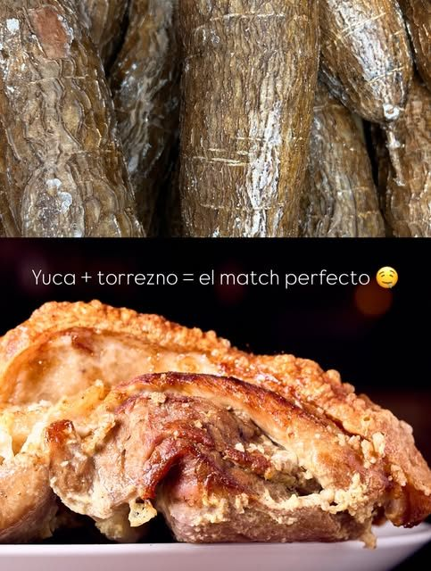
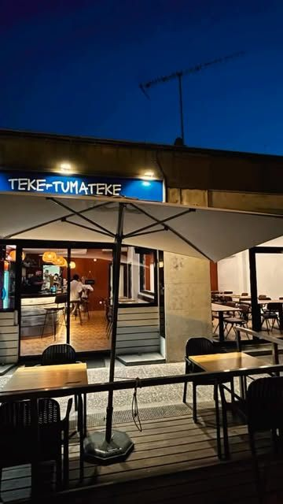

Chilaquiles
Chilaquiles de cochinita pibil.
Comida mexicana casera en la calle Narcís Blanch. Tacos, nachos, chilaquiles y margaritas para cenar con amigos.
4,9 en Google · 354 reseñas

Nachos
ChilaquilesTortillas

FrozenMango
Fiestuki
En la cocina del Teke hay chiles secos, tortillas, guisos y salsas: comida mexicana casera, como la de casa.
Chilaquiles de cochinita pibil.
Guisos para rellenar tus tacos.
La base de todo: tortillas calentitas en cada taco.
El match perfecto para picar.
Reserva por teléfono o pásate. El horario actualizado y las preguntas frecuentes, en nuestro Instagram.